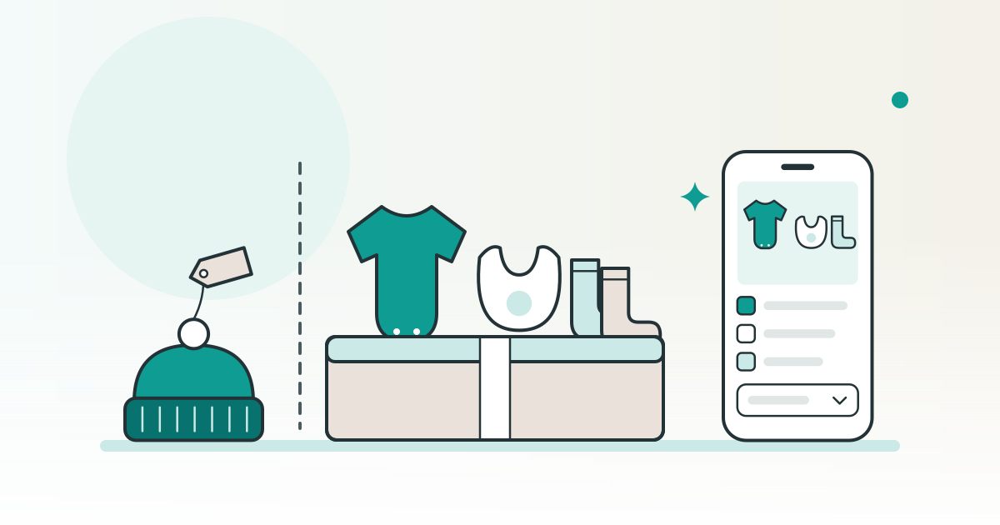

SHOPKIT コラム
ベビー服をセットで販売するには組み合わせ・同梱内容・別売りの示し方

ベビー服をセット販売する商品ページでは、届く物と点数を先に決め、写真・説明・注文の選択肢を同じ内容にそろえます。一緒に写した帽子や小物まで付くと思われないように、別売りの物も近くに示しましょう。組み合わせの記録から、価格や衣類の表示で確かめることまで紹介します。
この記事は、完成品のネットショップを販売している SHOPKIT が書いています。
この記事は、セットの内容を決めて商品ページへ載せる準備を扱います。包装の注文を受ける方法や、贈り先へ送る手順は別の作業として分けて考えましょう。
- 届く物・別売り・撮影用の小物を分けて示す。
- 組み合わせごとに、各品の色・サイズ・点数を記録する。
- 写真と選択欄を照らし、表示や規制を確かめてから掲載する。
セットに含む物と含まない物は、最初に一覧で示す
セット名だけで説明を終えず、何がどれだけ届くかを一覧にします。ロンパース、スタイ、帽子を組み合わせる例なら、それぞれを商品として扱うのか、写真に添えるだけなのかを先に決めましょう。スタイとは、赤ちゃんの首元に付けるよだれかけです。
撮影のときに見栄えを整えるために置いた物と、商品として届ける物が混ざらないよう、写真に使う前に区分を残します。次の表はページを作るための整理例です。実際の商品のセット内容を示すものではありません。
| 区分 | 先に決めること | ページでの示し方 |
|---|---|---|
| セットに含む品 | 商品名、各品の点数、色とサイズ。 | 届く物の一覧を写真の近くに置く。 |
| 別売りの品 | セットに含めず、別に注文を受ける品。 | 写真の該当する品と「別売り」の説明を対応させる。 |
| 撮影用の小物 | 背景の布や飾りなど、商品として扱わない物。 | 含まれない物が分かる説明を添え、届く物だけの写真も用意する。 |
| 包装 | 写真にある箱や袋が、その注文に含まれるか。 | 服の内容とは分けて、含む範囲を短く示す。 |
「小物は含みません」という文だけで、写真のどれを指すか分からない場合は、品名でも示します。写真から外せる撮影用の小物は外し、説明を読まないと中身を取り違える構成になっていないかを見直しましょう。
組み合わせごとのサイズと中身を、記録の表にする
セット全体の名前と、構成する品ごとの情報を分けて記録します。同じセット名でも、選ぶ色やサイズによって帽子の仕様などが変わるなら、その組み合わせを別に照らせるようにしましょう。セット全体へ付けたサイズ名だけで、各品の大きさが伝わると考えないことが大切です。
| 記録する項目 | 残す内容 | 照らす資料 |
|---|---|---|
| セットを区別する情報 | セット名、店内の管理番号、選択欄に出す呼び名。 | 販売する組み合わせの一覧。 |
| 構成する各品 | 品名、品番、色、サイズ表記、含める点数。 | 仕入れ先の仕様資料と実物。 |
| 組み合わせの条件 | 品ごとに色やサイズを選べるか。固定の組み合わせか。 | 実際に用意できる中身と注文欄。 |
| 掲載する情報 | 使う写真、説明文、選択肢の名称、見直した日。 | 公開前の商品ページの表示。 |
表では、仕入れ先のサイズ表記と店内での呼び名を対応させます。ロンパースのサイズ名が同じだから帽子も同じ意味だと決め付けず、各品の資料へ戻って確かめてください。実際に測った値を載せる場合も、どの品の、どの場所を測ったかが分かる形にします。
一部の品が用意できない場合は、残った物をそのまま同じセット名で売らないようにします。組み合わせを変えるなら、表・写真・説明・選択肢を一緒に見直してから掲載しましょう。
写真・説明・注文の選択肢を、同じ中身にそろえる
お客様が選ぶ順に、写真から選択欄までを読み通して照合します。写真が違うセットのまま、説明文だけ直っていることはないかを点検しましょう。色やサイズを選び直したときにも、どの品が届くのかが追える案内を用意します。
- 届く物だけを示す写真を読む。各品が見分けられ、別売りや背景の物が混ざっていないかを照らします。
- 説明の一覧と写真を対応させる。品名、点数、色、各品のサイズに食い違いがないかを見ます。
- 選択欄の呼び名を読む。記録表の組み合わせへ結び付く名前になっているかを確かめます。
- 選んだ内容を読み返す。選択後の表示でも、セットの中身と購入する単位が分かるかを点検します。
品ごとに色やサイズを選べないセットなら、そのことを選択欄の近くにも書きます。すべて自由に選べるような写真や文にせず、固定の組み合わせと、選べる項目を分けて案内してください。
スマートフォンでも、別売りの注記が写真から遠く離れていないかを読み直します。画面の幅が変わると、写真と注記の距離や折り返し方も変わるため、写真だけを見て判断しないようにしましょう。
関連：ネットショップの商品写真の撮り方｜一覧でそろって見える条件と使えない画像
価格を比べて伝えるなら、同じ中身かと根拠を確かめる
別々に買う場合と比べる前に、比較に使う商品と条件をそろえます。写真をまとめただけで安さを打ち出さず、実際に別売りしている品か、同じ仕様か、税込・税抜の扱いがそろっているかを読み返しましょう。
消費者庁の景品表示法関係ガイドライン等には、不当な価格表示についての考え方を示す資料が案内されています。比較の相手となる価格の出所や時点を説明できない段階では、安さの比較を載せず、届く内容を伝える形にしておきましょう。
国税庁の「総額表示」の義務付けは、事業者が消費者に向けて先に価格を示す際の、消費税分を含めた表示について案内しています。セット全体の値段なのか、構成する品の値段なのかも、価格の近くで分かるようにします。
比べる文を掲載するなら、対象の品、価格の根拠、確認した日を記録に残します。値付けの計算を繰り返すより、ページに書いた比較を自分の資料で説明できるかを先に確かめてください。
関連：ネットショップの価格の決め方｜原価・送料・手数料と税込の表示
乳幼児の服は、品ごとに表示と規制の対象を確かめる
セットとしてまとめる作業と、それぞれの衣類に必要な表示や規制の確認を分けます。消費者庁の家庭用品品質表示法の案内は、規制の対象が法令で指定された家庭用品に限られることを示しています。セットという呼び名だけで対象を判断せず、構成する品の種類を確認しましょう。
同庁の繊維製品一覧表では、品目別に、繊維の内容や洗濯などの扱い方、表示する事業者の連絡先といった表示事項を確認できます。該当する品目と注記を読み、セットの説明文だけで実物に付ける表示の確認を済ませないようにしてください。
e-Gov法令検索の有害物質を含有する家庭用品の規制に関する法律では、指定の家庭用品について有害物質に関する基準を設け、その基準に合わない対象品の販売などを禁じています。厚生労働省の同法の施行規則には、対象の家庭用品と基準が別表で定められています。該当する品や物質を資料と照らし、不明な点は担当窓口へ相談しましょう。
仕入れ先の資料は、品番や対象製品が実物と対応するかを見ます。資料があるという理由だけで、セット全体を「赤ちゃんに安全」と言い切る説明にはしないでください。
関連：韓国子供服のネットショップを始めるには｜仕入れ・価格帯・サイズ表記
お店を買って始めるときは、セットの情報と受け取れる資料を照らす
購入前に、商品ページのセット内容をどの資料で照合できるかを質問にしておきましょう。SHOPKITの2026年10月15日時点のサービスページは、商品と店舗を整えて販売を始める準備をした状態でお渡しすると案内しています。お渡しする内容には、お店一式と仕入れの情報、運営・集客のマニュアルが含まれます。出典：お渡しするもの。
セットに含む各品の情報、写真の参照先、色やサイズの選択肢を、受け取れる資料でどこまで照らせるかを聞いておきます。組み合わせを変える場合は、誰がどの情報を更新するかも整理してから検討してください。
お店一式が付くことと、個別製品の表示や規制への対応が資料で確かめられることは、分けて質問します。説明に足りない情報を残し、各品の仕様とセットの案内が対応するかを見直しましょう。
よくある質問
ベビー服のセット写真に写した小物は、どのように案内しますか？
セットに含む品、別売りの品、撮影用の小物を分けて示します。どの物を指すか分かる説明を写真の近くに置き、届く物だけの写真も用意しましょう。
セットのサイズ名だけで、帽子やスタイの大きさも伝えられますか？
各品の資料を照らし、品ごとのサイズ表記や仕様を残します。セット全体のサイズ名が、そのまま各品に共通する意味だと決め付けないようにしましょう。
別売り価格の根拠がないときは、セットの安さをどう示しますか？
本文では、比較する価格の出所や時点を説明できない段階では安さの比較を載せず、届く内容を伝える方法を勧めています。価格を比べる際は、同じ仕様や表示条件かも照らしてください。
セットの中身を変更したら、商品ページのどこを直しますか？
組み合わせの記録表と、写真、説明の一覧、注文の選択肢を一緒に見直します。変更前の写真や、以前の点数の説明が残っていないかを点検しましょう。
※ SHOPKITのお渡しするものについては、2026年10月15日時点のサービスページの記載です。公的資料は2026年10月26日に確認しました。